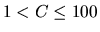
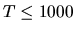
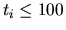

| Problem A: Railroads |
Nevertheless, tomorrow in the early morning hours Jill will have to travel from Hamburg to Darmstadt in order to get to the regional programming contest. Since she is afraid of arriving too late and being excluded from the contest she is looking for the train which gets her to Darmstadt as early as possible. However, she dislikes to get to the station too early, so if there are several schedules with the same arrival time then she will choose the one with the latest departure time.
Part one lists the names of all cities connected by the railroads. It starts with a number , followed by C lines containing city names. These names consist of letters.
Part two describes all the trains running during a day. It starts with a number  followed by T train descriptions. Each of them consists of one line with a number  and ti more lines with a time and a city name, meaning that passengers can get on or off the train at that time at that city.
Part three consists of three lines: Line one contains the earliest journey's starting time, line two the name of the city where she starts, and line three the destination city. The two cities are always different.
If a connection exists then print the two lines containing zero padded timestamps and locations as shown in the sample. Use blanks to achieve the indentation. If no connection exists on the same day (i.e., arrival before midnight) then print a line containing ``No connection''.
After each scenario print a blank line.
2 3 Hamburg Frankfurt Darmstadt 3 2 0949 Hamburg 1006 Frankfurt 2 1325 Hamburg 1550 Darmstadt 2 1205 Frankfurt 1411 Darmstadt 0800 Hamburg Darmstadt 2 Paris Tokyo 1 2 0100 Paris 2300 Tokyo 0800 Paris Tokyo
Scenario 1 Departure 0949 Hamburg Arrival 1411 Darmstadt Scenario 2 No connection